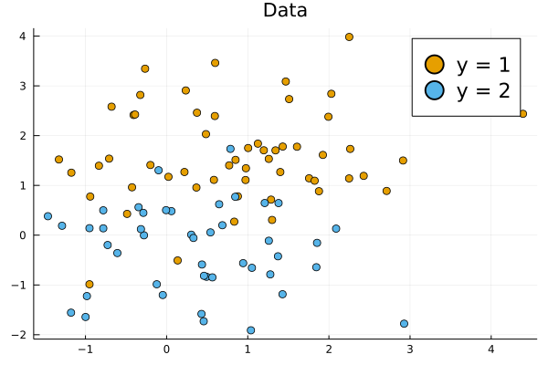
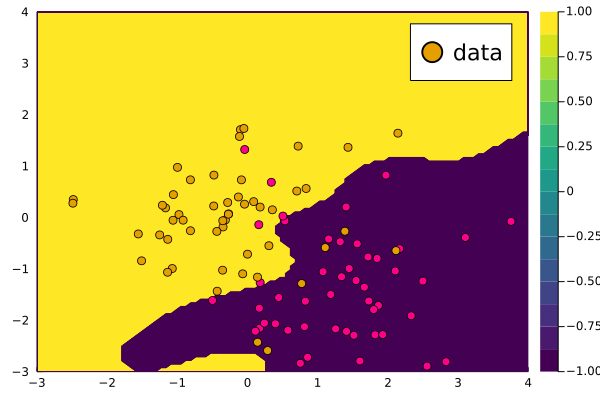

Support Vector Machines

You are seeing the HTML output generated by Documenter.jl and Literate.jl from the Julia source file. The corresponding notebook can be viewed in nbviewer.
TODO: introduction
We first load the packages we will need in this notebook:
using Distributions
using KernelFunctions
using LIBSVM
using LinearAlgebra
using Plots
using Random
# Set plotting theme
theme(:wong)
default(; legendfontsize=15.0, ms=5.0);
# Set seed
Random.seed!(1234);Data Generation
We first generate a mixture of two Gaussians in 2 dimensions
xmin = -3;
xmax = 3; # Limits for sampling μ₁ and μ₂
μ = rand(Uniform(xmin, xmax), 2, 2) # Sample 2 Random Centers2×2 Matrix{Float64}:
0.545068 0.397424
1.60078 -0.239488We then sample both the input $x$ and the class $y$:
N = 100 # Number of samples
y = rand((-1, 1), N) # Select randomly between the two classes
x = Vector{Vector{Float64}}(undef, N) # We preallocate x
x[y .== 1] = [rand(MvNormal(μ[:, 1], I)) for _ in 1:count(y .== 1)] # Features for samples of class 1
x[y .== -1] = [rand(MvNormal(μ[:, 2], I)) for _ in 1:count(y .== -1)] # Features for samples of class 2
scatter(getindex.(x[y .== 1], 1), getindex.(x[y .== 1], 2); label="y = 1", title="Data")
scatter!(getindex.(x[y .== -1], 1), getindex.(x[y .== -1], 2); label="y = 2")
Select randomly between two classes:
y_train = rand([-1, 1], N);Random attributes for both classes:
X = Matrix{Float64}(undef, 2, N)
rand!(MvNormal(randn(2), I), view(X, :, y_train .== 1))
rand!(MvNormal(randn(2), I), view(X, :, y_train .== -1));
x_train = ColVecs(X);We create a 2D grid based on the maximum values of the data
test_range = range(floor(Int, minimum(X)), ceil(Int, maximum(X)); length=100)
x_test = ColVecs(mapreduce(collect, hcat, Iterators.product(test_range, test_range)));
N_test = 100 # Size of the grid
xgrid = range(extrema(vcat(x...)) .* 1.1...; length=N_test) # Create a 1D grid
xgrid_v = vec(collect.(Iterators.product(xgrid, xgrid))); # Combine into a 2D gridCreate kernel function:
k = SqExponentialKernel() ∘ ScaleTransform(2.0)
λ = 1.0; # Regularization parameterPredictor
We create a function to return the optimal prediction for a test data x_new
LIBSVM can make use of a pre-computed kernel matrix. KernelFunctions.jl can be used to produce that. Precomputed matrix for training (corresponds to linear kernel)
model = svmtrain(kernelmatrix(k, x_train), y_train; kernel=LIBSVM.Kernel.Precomputed)LIBSVM.SVM{Int64}(LIBSVM.SVC, LIBSVM.Kernel.Precomputed, nothing, 1, 2, [1, -1], Int32[1, 2], Float64[], Int32[], LIBSVM.SupportVectors{Vector{Int64}, Matrix{Int64}}(61, Int32[30, 31], [1, 1, 1, 1, 1, 1, 1, 1, 1, 1, 1, 1, 1, 1, 1, 1, 1, 1, 1, 1, 1, 1, 1, 1, 1, 1, 1, 1, 1, 1, -1, -1, -1, -1, -1, -1, -1, -1, -1, -1, -1, -1, -1, -1, -1, -1, -1, -1, -1, -1, -1, -1, -1, -1, -1, -1, -1, -1, -1, -1, -1], [1 2 5 20 24 27 29 33 34 36 40 43 46 49 53 58 63 64 65 67 73 76 79 81 83 91 94 96 97 99 9 11 16 19 21 22 23 28 30 38 39 41 42 44 48 52 54 55 56 61 66 71 72 74 85 89 90 92 93 95 98], Int32[1, 2, 5, 20, 24, 27, 29, 33, 34, 36, 40, 43, 46, 49, 53, 58, 63, 64, 65, 67, 73, 76, 79, 81, 83, 91, 94, 96, 97, 99, 9, 11, 16, 19, 21, 22, 23, 28, 30, 38, 39, 41, 42, 44, 48, 52, 54, 55, 56, 61, 66, 71, 72, 74, 85, 89, 90, 92, 93, 95, 98], LIBSVM.SVMNode[LIBSVM.SVMNode(0, 1.0), LIBSVM.SVMNode(0, 2.0), LIBSVM.SVMNode(0, 5.0), LIBSVM.SVMNode(0, 20.0), LIBSVM.SVMNode(0, 24.0), LIBSVM.SVMNode(0, 27.0), LIBSVM.SVMNode(0, 29.0), LIBSVM.SVMNode(0, 33.0), LIBSVM.SVMNode(0, 34.0), LIBSVM.SVMNode(0, 36.0), LIBSVM.SVMNode(0, 40.0), LIBSVM.SVMNode(0, 43.0), LIBSVM.SVMNode(0, 46.0), LIBSVM.SVMNode(0, 49.0), LIBSVM.SVMNode(0, 53.0), LIBSVM.SVMNode(0, 58.0), LIBSVM.SVMNode(0, 63.0), LIBSVM.SVMNode(0, 64.0), LIBSVM.SVMNode(0, 65.0), LIBSVM.SVMNode(0, 67.0), LIBSVM.SVMNode(0, 73.0), LIBSVM.SVMNode(0, 76.0), LIBSVM.SVMNode(0, 79.0), LIBSVM.SVMNode(0, 81.0), LIBSVM.SVMNode(0, 83.0), LIBSVM.SVMNode(0, 91.0), LIBSVM.SVMNode(0, 94.0), LIBSVM.SVMNode(0, 96.0), LIBSVM.SVMNode(0, 97.0), LIBSVM.SVMNode(0, 99.0), LIBSVM.SVMNode(0, 9.0), LIBSVM.SVMNode(0, 11.0), LIBSVM.SVMNode(0, 16.0), LIBSVM.SVMNode(0, 19.0), LIBSVM.SVMNode(0, 21.0), LIBSVM.SVMNode(0, 22.0), LIBSVM.SVMNode(0, 23.0), LIBSVM.SVMNode(0, 28.0), LIBSVM.SVMNode(0, 30.0), LIBSVM.SVMNode(0, 38.0), LIBSVM.SVMNode(0, 39.0), LIBSVM.SVMNode(0, 41.0), LIBSVM.SVMNode(0, 42.0), LIBSVM.SVMNode(0, 44.0), LIBSVM.SVMNode(0, 48.0), LIBSVM.SVMNode(0, 52.0), LIBSVM.SVMNode(0, 54.0), LIBSVM.SVMNode(0, 55.0), LIBSVM.SVMNode(0, 56.0), LIBSVM.SVMNode(0, 61.0), LIBSVM.SVMNode(0, 66.0), LIBSVM.SVMNode(0, 71.0), LIBSVM.SVMNode(0, 72.0), LIBSVM.SVMNode(0, 74.0), LIBSVM.SVMNode(0, 85.0), LIBSVM.SVMNode(0, 89.0), LIBSVM.SVMNode(0, 90.0), LIBSVM.SVMNode(0, 92.0), LIBSVM.SVMNode(0, 93.0), LIBSVM.SVMNode(0, 95.0), LIBSVM.SVMNode(0, 98.0)]), 0.0, [1.0; 1.0; 1.0; 1.0; 1.0; 1.0; 1.0; 0.7268237416651218; 1.0; 0.4099738048519151; 1.0; 1.0; 0.8010800925569556; 0.5213415121316745; 1.0; 0.6956429711539635; 0.22280243991908405; 0.42361734172898674; 1.0; 0.7340417487790871; 0.38535352891383584; 0.5086245307071742; 0.34887950475371715; 0.5578915562015045; 1.0; 0.05799498017961183; 1.0; 0.8762034485445707; 0.0023479660861682092; 0.7040261930360701; -0.7842855892391213; -0.37283959427704744; -1.0; -0.24592193176386679; -0.7154628358041202; -1.0; -1.0; -1.0; -0.6458661034038348; -0.4171347235763521; -1.0; -0.5886401155927945; -0.877357675532847; -0.4296557385513455; -0.2159094465987557; -1.0; -0.18606880078709953; -1.0; -1.0; -1.0; -1.0; -0.12898504501533795; -1.0; -0.6051931666676554; -1.0; -0.07412274776779958; -1.0; -1.0; -0.22529279907216257; -1.0; -0.46390904755930035], Float64[], Float64[], [-0.00112065353934565], 3, 0.01, 200.0, 0.001, 1.0, 0.5, 0.1, true, false)We predict the value of y on this grid and plot it against the data:
Precomputed matrix for prediction
y_pr, _ = svmpredict(model, kernelmatrix(k, x_train, x_test));Compute prediction on a grid:
contourf(test_range, test_range, y_pr; label="predictions")
scatter!(X[1, :], X[2, :]; color=y_train, lab="data", widen=false)
#scatter!(getindex.(x[y .== 1], 1), getindex.(x[y .== 1], 2); label="y = 1")
#scatter!(getindex.(x[y .== -1], 1), getindex.(x[y .== -1], 2); label="y = 2")
#xlims!(extrema(xgrid))
#ylims!(extrema(xgrid))
This page was generated using Literate.jl.